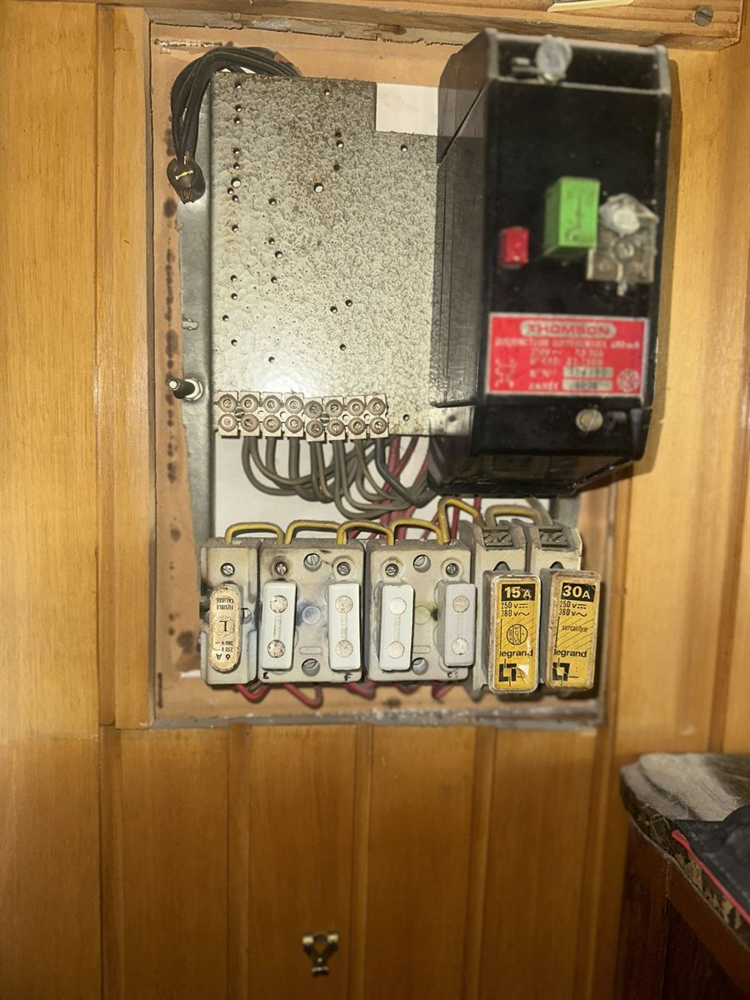
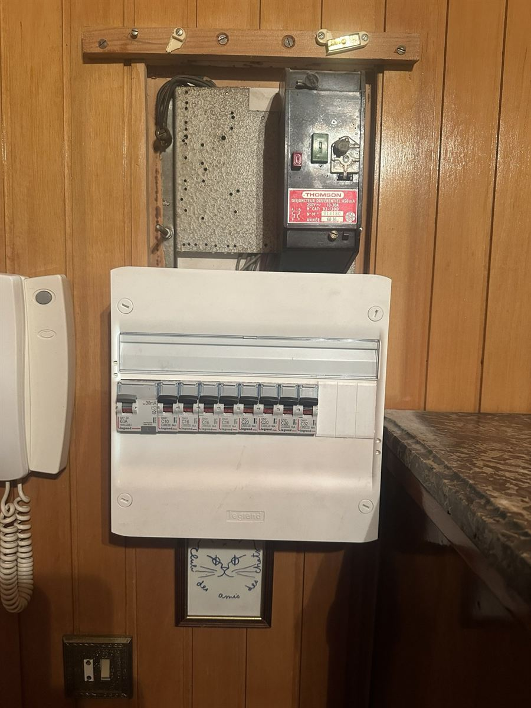
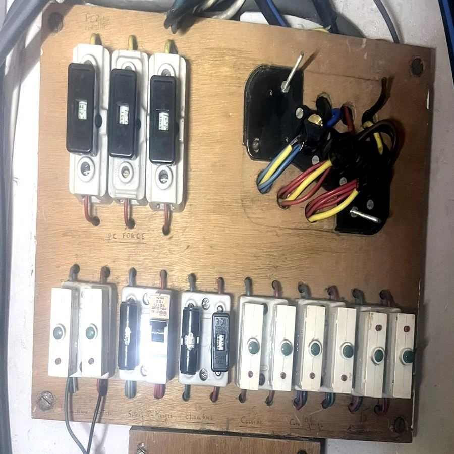
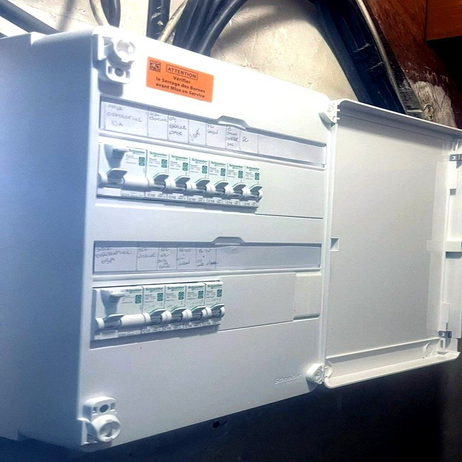
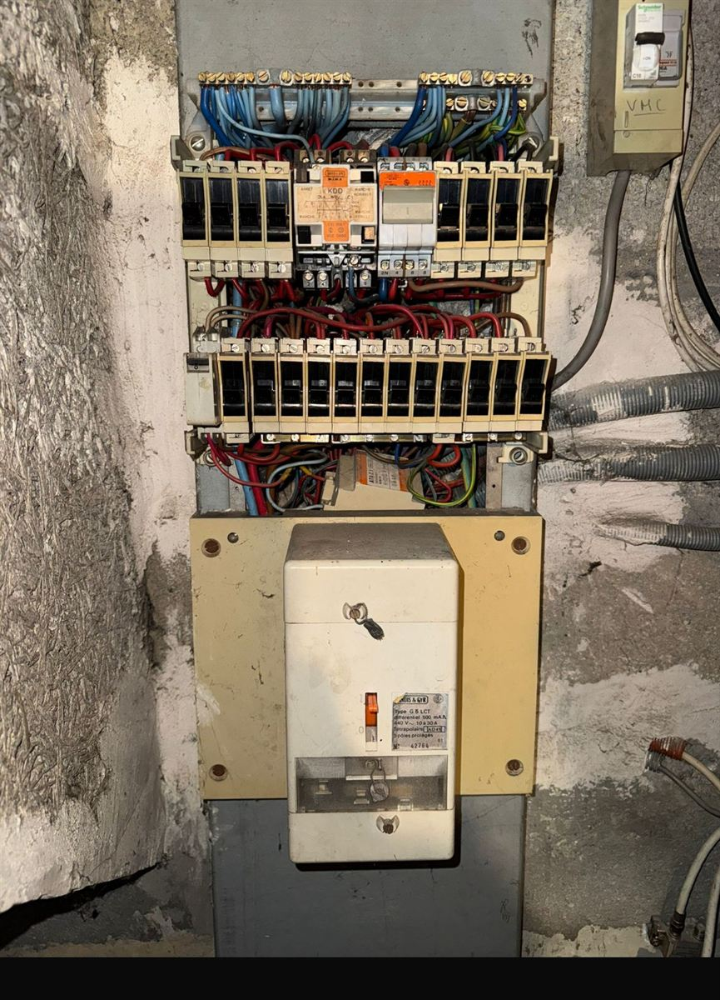
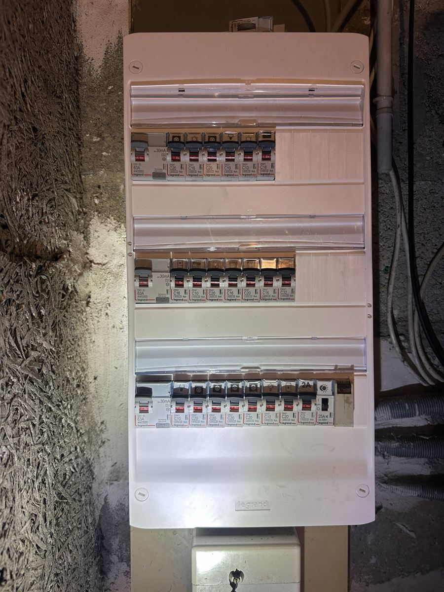

Fusibles en porcelaine, panneau en bois, différentiel d'un autre âge : un tableau électrique ancien fonctionne souvent encore, mais il ne protège plus comme il le devrait. Voici comment reconnaître un tableau à remplacer, ce que dit la norme NF C 15-100, ce que coûte un remplacement, et trois cas réels que nous avons traités en Île-de-France.
Les signes qu'un tableau électrique est à remplacer
- Des fusibles à cartouche en porcelaine, ou un tableau monté sur un panneau en bois.
- Un différentiel qui n'est pas de 30 mA. Le seuil de 30 mA est celui qui protège les personnes contre l'électrisation. Les très anciens modèles affichent 500 ou 650 mA.
- Des traces de chaleur : plastique noirci, odeur de brûlé, borne fondue. C'est le signe d'une connexion qui chauffe : voir notre cas différentiel qui ne se réarme plus.
- Des fils à nu dans un bornier ouvert, ou des circuits repérés à la main, voire pas repérés du tout.
- Un disjoncteur qui saute souvent : voir pourquoi mon disjoncteur saute-t-il.
Ce que dit la norme NF C 15-100
La norme NF C 15-100 encadre les installations électriques des logements. Elle prévoit notamment une protection par un interrupteur différentiel 30 mA, des circuits protégés par des disjoncteurs adaptés, des circuits dédiés aux gros appareils (plaque de cuisson, four, lave-linge), le repérage des circuits et une liaison équipotentielle. Un tableau ancien ne respecte en général pas ces points. Pour les obligations lors d'une vente ou d'une location, lisez notre guide mise aux normes NF C 15-100 : obligations et prix.
Trois cas réels de remplacement
Crosne (91) : fusibles en porcelaine et différentiel de 650 mA
Le tableau, logé dans un cadre en lambris, comptait trois porte-fusibles en porcelaine, deux fusibles Legrand (15 A et 30 A) et un différentiel Thomson dont l'étiquette indique 650 mA, soit plus de vingt fois le seuil de 30 mA. Nous l'avons remplacé par un coffret Legrand avec un différentiel 63 A 30 mA et huit disjoncteurs de 10 A à 32 A.


Bezons (95) : panneau en bois et fils à nu
Le tableau d'origine était monté sur un panneau en bois, avec des fusibles à cartouche en porcelaine et des fils de couleur laissés à nu dans un bornier ouvert. Les circuits étaient repérés à la main. Nous l'avons remplacé par un coffret Schneider Electric équipé de deux interrupteurs différentiels et de disjoncteurs étiquetés circuit par circuit.


Guyancourt (78) : différentiel de 500 mA et câblage dense
Le tableau d'origine comptait un différentiel Landis & Gyr de 500 mA, une vingtaine de disjoncteurs anciens, deux contacteurs et un câblage dense, dans un local aux murs noircis. Nous l'avons remplacé par un coffret Legrand à trois rangées, chacune protégée par un différentiel 63 A 30 mA, avec des pictogrammes sur chaque circuit.


Combien coûte le remplacement d'un tableau électrique ?
- La mise aux normes d'un mini tableau est un forfait fixe de 240 € TTC, déplacement en plus (1 à 2 heures selon l'état initial).
- Le remplacement complet d'un tableau démarre à partir de 1 200 € TTC et est annoncé avant les travaux.
- Le déplacement dépend de votre département (65 € à 90 € TTC). Tous les tarifs sont détaillés sur notre page prix d'un électricien à Paris.
Le tableau électrique en questions
Faut-il changer un tableau électrique à fusibles ?
Ce n'est pas toujours une obligation légale immédiate pour un logement que l'on habite, mais c'est une question de sécurité : un tableau à fusibles sans différentiel 30 mA ne protège pas contre l'électrisation. Il est aussi concerné lors d'une vente ou d'une location, voir notre guide sur la norme NF C 15-100.
Peut-on changer son tableau électrique soi-même ?
Nous le déconseillons : l'intervention touche à la coupure, au câblage et aux protections de tout le logement. Un professionnel assuré en décennale engage sa responsabilité sur le travail réalisé.
Combien de temps dure le remplacement ?
La mise aux normes d'un mini tableau prend 1 à 2 heures selon l'état initial. Pour un remplacement complet, la durée est annoncée avec le devis.
Quels signes doivent faire appeler un électricien en urgence ?
Une odeur de brûlé, des étincelles, un tableau chaud ou noirci, ou un différentiel qui refuse de se réarmer. Coupez alors le disjoncteur général si vous pouvez l'atteindre sans risque, et appelez.